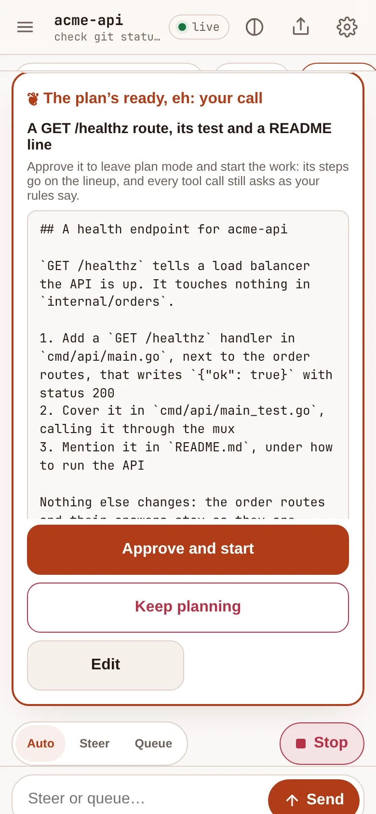
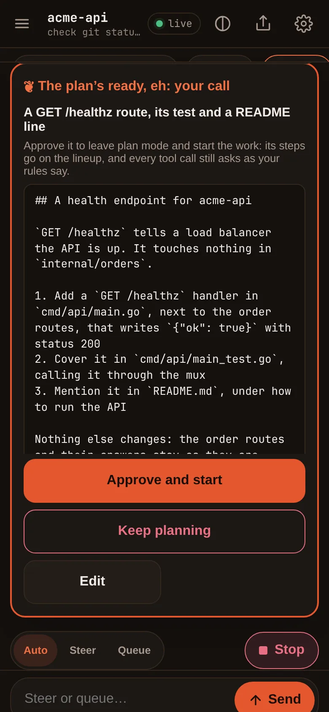
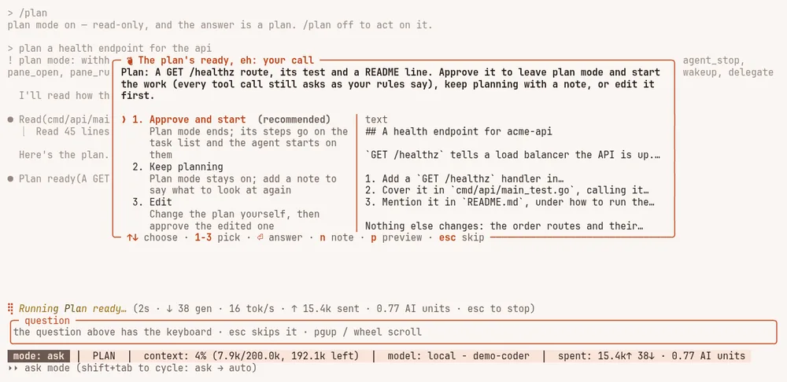
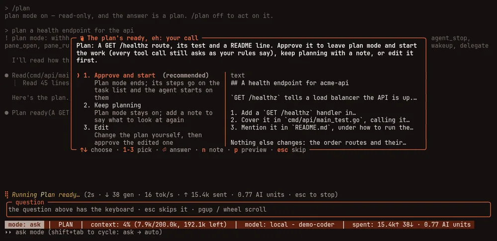
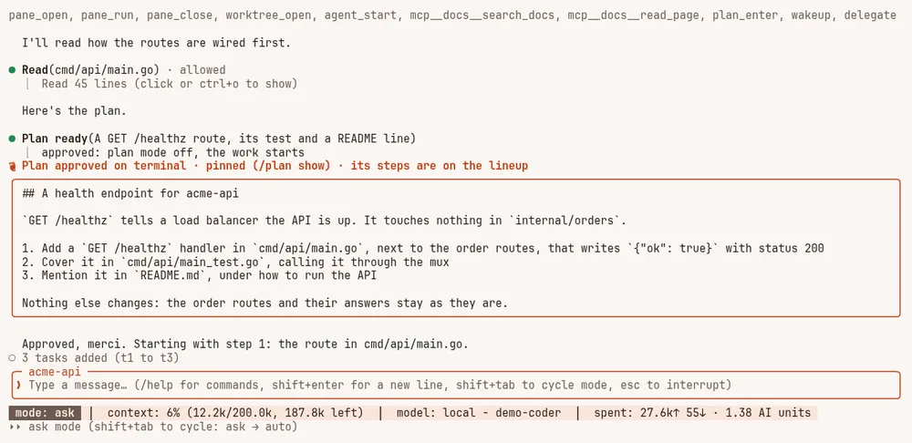
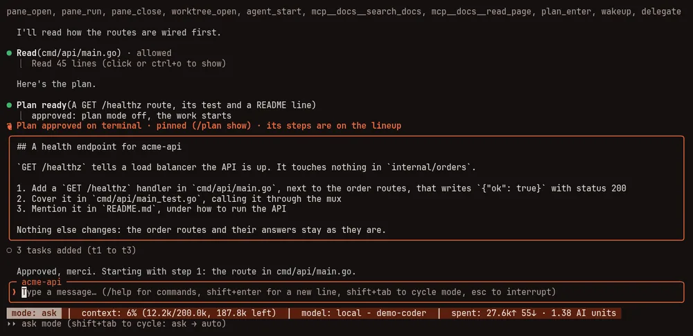

Using the harnessDay to day7 min read
Plan mode #
On this page
Measure twice, cut once. In plan mode the agent looks around the project and writes a plan, and it cannot change anything while it does. When the plan is ready it hands it to you: you approve it and the work starts, ask for more planning, or edit the plan yourself first.
In plain words #
What it is. A mode where the agent only looks: it reads files, searches, asks the project's index and asks you questions, then writes a plan. Everything that would change something (writing a file, running a command, opening a terminal pane, starting another agent, sending a message to one) is held back until you approve the plan.
Why you want it. A big or risky change goes better when the plan comes first and you see it before anything moves. Planning is also where a strong model pays off most: one careful pass over the project, one document out. It pairs well with
/model auto.What to do. Type
/plan(or/plan on) and then your request. When the agent is done, a dialog titled The plan's ready, eh: your call shows the plan with three choices:Choice What happens Approve and start Plan mode ends. The plan is pinned in the conversation, its steps go on the lineup (and the checklist, when it is on), and the agent starts on them Keep planning Plan mode stays on. Add a note ( n) to say what to look at again; the agent revises the plan and hands it over againEdit The whole plan opens in your editor ( $VISUAL,$EDITOR, orvi). What you save is the plan approved; save an empty file to approve nothingWhat approving does, and does not do. It turns plan mode off and gives the agent the plan to carry out. It does not approve any tool call: each write or command still asks as your permission rules say.
Nobody there? The plan is never approved for you. If nobody can answer (a
--promptrun, a session nobody is watching) or nobody answers in time, plan mode stays on and the agent ends its turn with the plan as its answer. You approve it later, or turn plan mode off yourself with/plan off.The agent can ask for it too. On a task large or unclear enough to need a plan first, the agent may ask to switch to plan mode: Plan first? Measure twice, cut once, with Switch to plan mode or Keep going. If you skip the question or do not answer in time, it switches (you can always
/plan off). In a run where nobody can be asked at all (a--promptrun, an A2A task, a served session with nobody connected) it does not switch, since nothing there could approve a plan and the run would stay read-only for good: it carries on, and says so.
Approve from your phone
The plan shows on your phone as a card too, with the whole plan, the same three choices and a text box for Edit. The first answer wins, wherever it was given. A device paired to watch only sees the plan and cannot approve it.


What you see #
In the terminal, the dialog is the same one as the agent's questions: the plan sits beside the
options on a wide terminal (p hides it), and behind p on a narrow one. 1, 2, 3 or the arrow keys and
Enter choose; n adds a note; Esc, then y, closes it without approving (plan mode stays on).


p hides it. A demo setup with a scripted model.Once approved, the plan stays in the conversation in a frame of its own, under a line that says who approved it, and the lineup notes the tasks it added:
❦ Plan approved on terminal · pinned (/plan show) · its steps are on the lineup
1. Add the --dry-run flag to config
2. Wire it in main.go
3. Test it
○ 3 tasks added (t1 to t3)

/plan show draws the last approved plan again. It says where it was approved: terminal, phone (<device>),
attach, or rpc.
Commands and settings #
| Command or setting | What it does |
|---|---|
/plan, /plan on | Plan mode on, from the next message |
/plan off | Plan mode off: the tools that change things are back |
/plan show | The plan approved last, again |
harness.approvals.timeout | How long a plan waits for your answer (10 minutes by default; off waits as long as it takes). Not while a phone or browser has the session open |
harness.questions.timeout | Used instead when you set it and not harness.approvals.timeout |
read_only on an MCP server | Its tools are offered in plan mode too (see below). In /settings → MCP servers: read-only |
See Harness settings.
Your MCP servers in plan mode #
In plain words. Maple cannot tell what another program's tools do, so while planning it holds back every MCP server's tools. If a server only looks (documentation search, an issue tracker you only read, a read-only database view), mark it read-only and plan mode offers its tools.
harness:
mcp_servers:
- name: docs
command: docs-mcp
read_only: trueTechnically.
read_only: trueis your word for the server. A tool's own annotations never make it read-only on their own: a server that saysreadOnlyHintfor its tools but that you have not marked stays withheld.- The annotations can still hold a tool back: a tool on a read-only server that says it is destructive
(
destructiveHint: truewithoutreadOnlyHint) is withheld anyway. - Only your own
config.yaml(or/settings) can mark a server. A project's config, or a project's.mcp.json, cannot, and a project's server with the same name as one of yours does not take your mark. - Tool calls to a read-only server still ask as your permission rules say.
Technical details #
What plan mode offers #
Plan mode offers a fixed list of tools that only look, and holds back everything else, including any tool added later that has not been put on the list:
| Offered | Withheld |
|---|---|
read_file, grep, glob, graph_search, graph_connections, history_search, recall, skill, the language servers' lsp_* look-ups (including lsp_references and lsp_symbols) | write_file, edit_file, multi_edit, apply_patch, lsp_rename, download, bash, kill_shell, monitor, remember |
web_fetch (it reads a page; its rules by site still apply) | |
mcp_resources (its rules by server still apply), send_file (it only reads), notify_person, tool_search | |
bash_output and pane_read (reading what already runs), agents_list, agent_read, agent_wait | delegate, agent_start, agent_message, agent_stop, local_claude |
ask_person, and plan_ready (only in plan mode) | pane_open, pane_run, pane_close, worktree_open |
tasks (list and get only), ledger (show only), agent_notes (list and read only), worktree (list only) | every MCP tool, unless its server is read_only |
A withheld tool is not sent to the model at all, and a call to one anyway (a model remembers tools from before the plan) is refused with a word on why. The transcript says once per message what was withheld.
Plan mode is not a sandbox: an offered tool goes through your permission rules as always. What it gives you is that nothing the agent calls while planning changes the project, and that it cannot act on its plan by accident.
plan_ready #
The agent calls it with the whole plan (Markdown, at most 64 KB) and an optional one-line summary. It gets back JSON:
status | plan_mode | Meaning |
|---|---|---|
approved | off | You approved it (or your edited plan, returned in plan). added says which tasks it put on the lineup |
keep_planning | on | You want more planning; your note is in person_note |
declined | on | You closed the dialog without approving |
no_person | on | Nobody could be asked |
timed_out | on | Nobody answered in time |
not_approved | on | Another program answered (an A2A caller, the control socket): only you approve a plan |
A call the agent wrote in the same message as plan_ready was written before you saw the plan: it is not run after you
approve, and the agent is told to call it again if the approved plan still needs it. While you edit a plan in your
editor, its wait stops.
The plan's steps for the lineup are its numbered items (or, without any, its top-level bullets), at most 30.
Where the dialog goes: the terminal, your phone or browser (remote control), an attached terminal,
and a program driving the session over --rpc, as a question with the three options and the plan as its
preview. An answer from an A2A caller or over the control socket is information and never approves.
plan_enter #
The agent calls it with a one-line reason. You are asked; Keep going keeps it working as it was. A skipped
question, or nobody answering in time, switches to plan mode, and the conversation says how it was decided. With
nobody to ask at all, it is refused ("status": "refused", plan_mode off, with the reason) and the run goes on. It is offered only outside plan mode, and neither tool needs an approval of its own: each is itself the
question.
See also #
- Questions the agent asks you The dialog plan mode's choices use, and where else you can answer.
- Harness settings
harness.approvals.timeout, which a plan waits by. - Commands Every slash command,
/planamong them. - MCP servers Connecting servers, and marking one read-only.